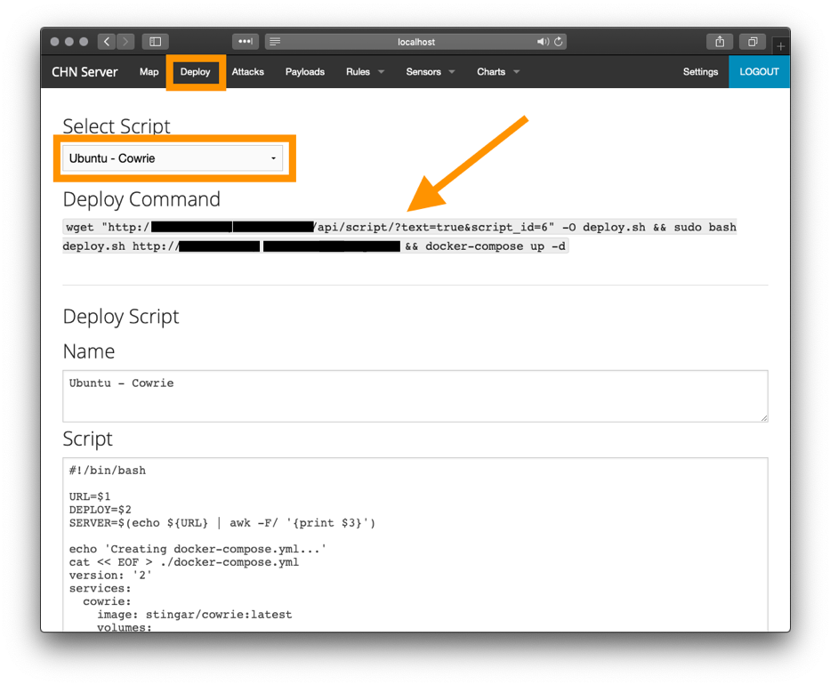
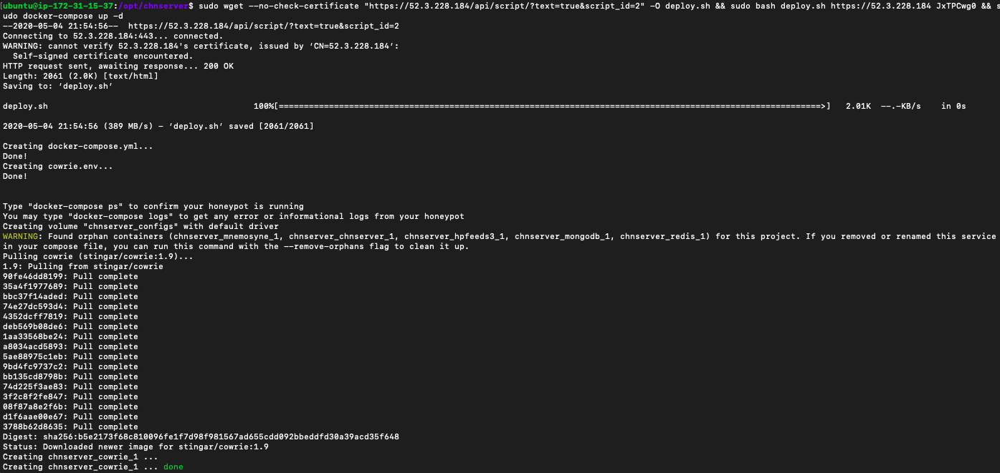
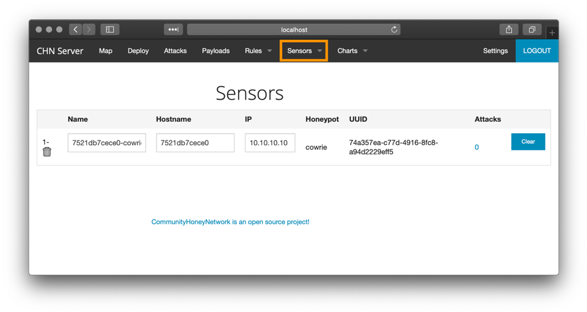

Deploying Your First Honeypot
Deploy a Cowrie honeypot
Switch to your web browser and log into the web portal for CHN Server (if your tab isn't already up).
From the menu at the top left, click "Deploy" in the menu bar. Next select the field labeled "Script" and select the "Ubuntu - Cowrie" option.

Next, Copy the "Deploy Command" from the web interface. Switch to the SSH terminal for your honeypot host and create a configuration directory for this honeypot (in this case, cowrie):
mkdir ~/cowrie && cd ~/cowrie
Paste the "Deploy Command" into the terminal for the Honeypot host. The script will generate the
appropriate docker-compose.yml and sysconfig files,
then start the docker-compose process to retrieve and run the images. Your output should look similar to the below:

Once the honeypot has been deployed, switch back the the CHN Server web interface. Select the "Sensor" tab from the menu and verify that the honeypot has successfully registered to CHN Server.

Repeat this process for the following honeypots:
- Ubuntu - RDPHoney
- Ubuntu - UHP